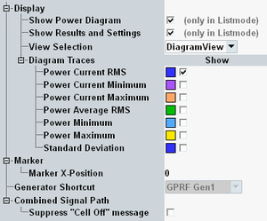

The tab contains mainly "Display" parameters, configuring the appearance of the measurement menu and selecting the displayed results.

In list mode, the checkboxes enable/disable the power diagram or the results and settings.
Selects the diagram view or the table view to display the results, see "Measurement Results".
Selects the statistical results to be shown in the diagram view.
See also: "Statistical Results"
Measurement results are selected by the CURRent, AVERage, MINimum, MAXimum mnemonics in the command headers, see "Results for Single-Step Power Evaluation".
In list mode, this setting selects the list item to which the marker is positioned.
Sets the connected GPRF generator instance, see "Generator Shortcut".
If the "... Signaling" softkey is selected and the cell signal is on and you press ON | OFF, a warning can be displayed, asking whether you really want to switch off the cell signal.
The checkbox suppresses the warning.
Remote command:n/a